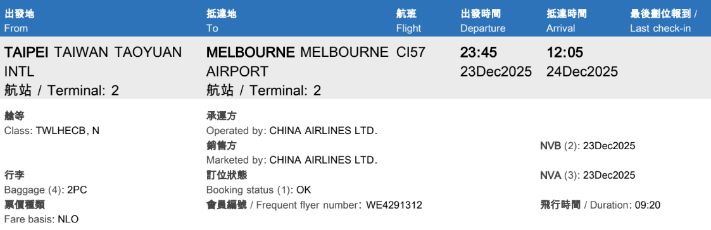
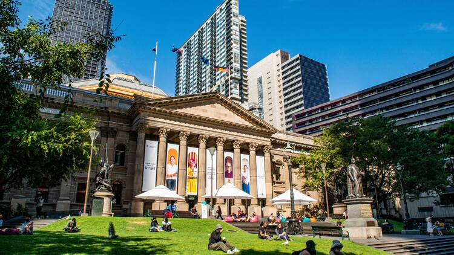
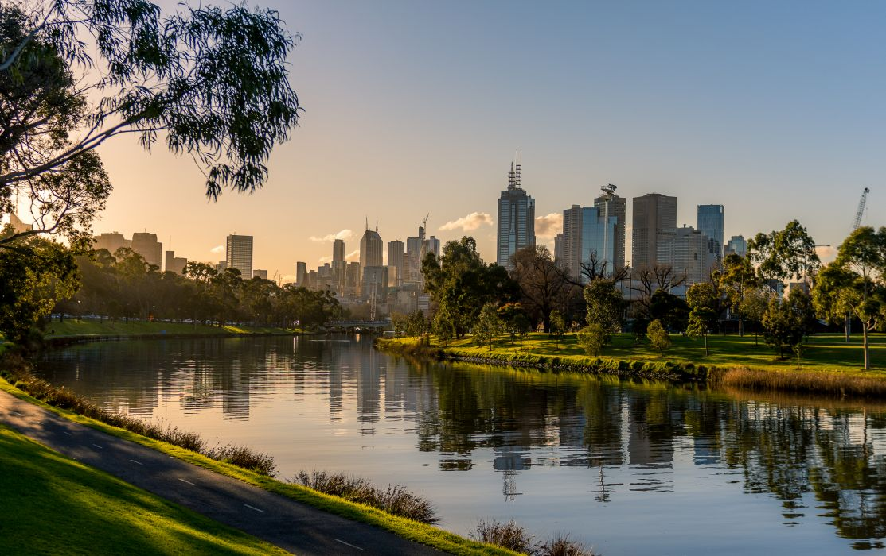
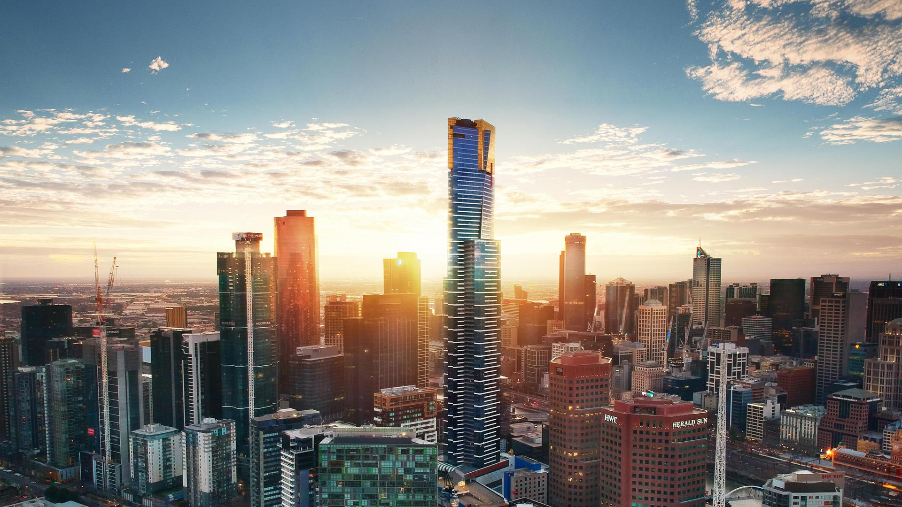

Day 1 · Dec 23–24
🎄 Arrival & Melbourne City
- Flight 台北 ✈︎ 墨爾本 · Luggage 23kg × 2

- Arrive at Melbourne T2
- Airbnb, then the city center for lunch at Kumo Desserts Melbourne
- Wander around Melbourne

State Library Victoria 
Yarra River 
Melbourne Skydeck